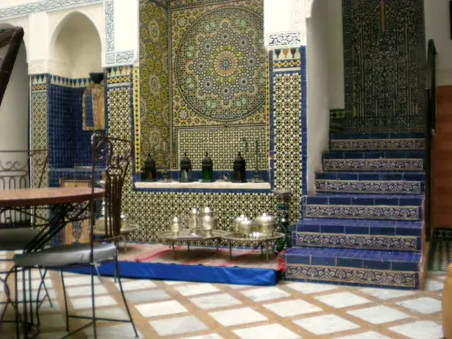
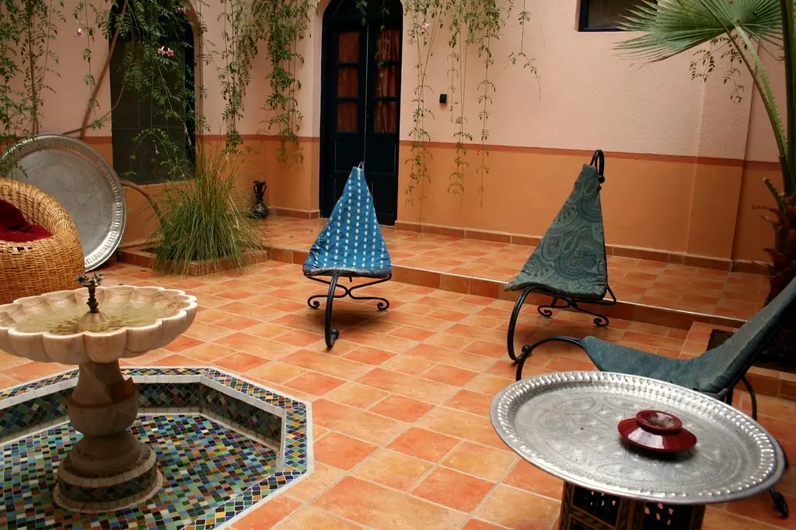
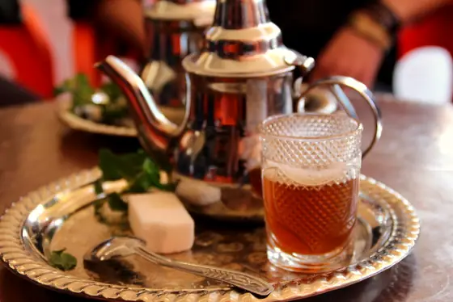
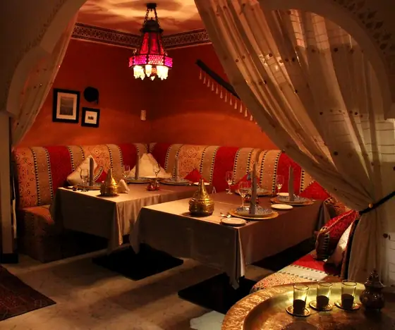
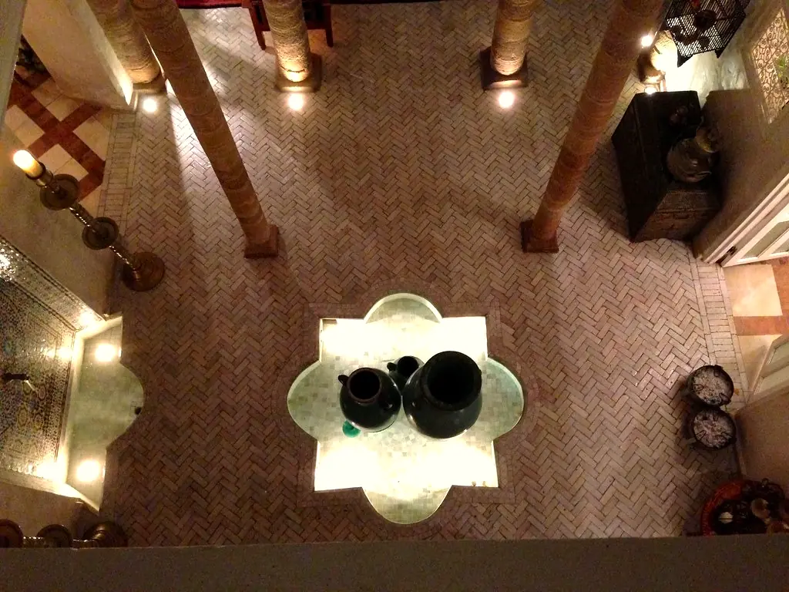

Cuisine marocaine · Médina de Marrakech
Le goût du safran, au cœur de la médina.
Un riad du XVIIIe siècle, une cuisine de marché et des recettes transmises de mère en fille.


Notre maison
Une cuisine de famille, dans un riad de famille
40ans de recettes familiales
3 minde la place Jemaa el-Fna
36couverts, pas un de plus
Les signatures
Trois plats pour une première visite

« On ne sert pas un repas, on reçoit des invités. »
Lalla Khadija, en cuisine depuis 1987
L'expérience
Trois façons de vivre Dar Zaafran
La terrasse

Le salon rouge
Ils sont venus
Ce qu'en disent nos invités
